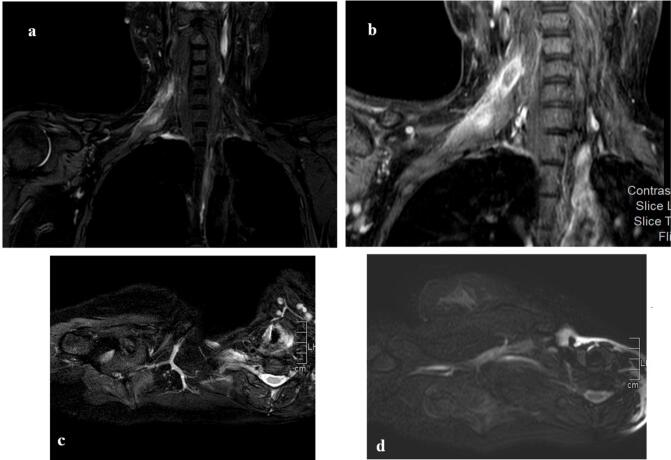
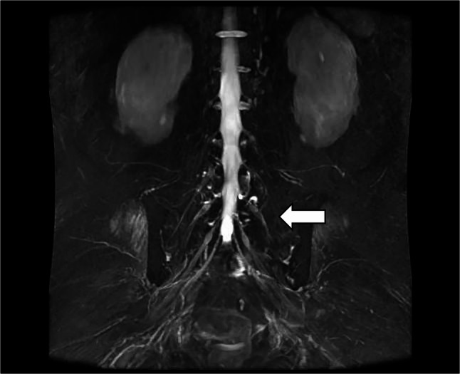
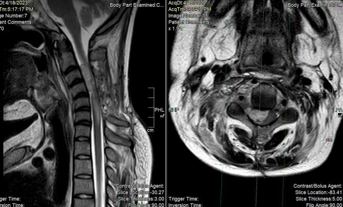

1678 — Đau do xâm lấn đám rối thần kinh ở bệnh nhân ung thư: u tái phát vs xạ trị
Tags: pattern:dau-than-kinh pattern:dam-roi-day pattern:u-xam-lan vung:dam-roi-canh-tay vung:dam-roi-than-kinh protocol:MRI-neurography protocol:EMG
Mức chắc chắn (certainty): tổng hợp y văn — chủ yếu ca lâm sàng, loạt hồi cứu và đồng thuận; không có thử nghiệm so sánh chiến lược chẩn đoán.
1. Tổng quan — vì sao "đau đám rối ở người ung thư" luôn là câu hỏi ung thư
Giải phẫu – cơ chế:
- Đám rối cánh tay (C5–T1) đi qua khoang cổ sau, ngách trên đòn, nách — đúng nơi có hạch, mô mềm, xương đòn, đỉnh phổi.
- Đám rối thắt lưng–cùng (L1–S4) nằm sau phúc mạc và trong khung chậu — nơi có chuỗi hạch chậu, tử cung, trực tràng, tiền liệt tuyến, xương cùng.
- Xâm lấn u gây đau do chèn ép + xâm nhập bao dây thần kinh (perineural spread), có thể lan theo ống sống gây chèn ép tủy (ca MPNST lan nội tủy — PMC11636133).
- Xạ trị gây xơ hóa mô quanh thần kinh, mất myelin/thiếu máu vi mạch → đau âm ỉ, yếu tiến triển nhiều tháng–nhiều năm sau xạ.
Vì sao không được "đoán già": hai bệnh cảnh trùng triệu chứng nhưng điều trị ngược nhau — u tái phát cần chẩn đoán mô học/điều trị hệ thống hoặc xạ lại; xạ trị tổn thương thì không xạ thêm (nguy cơ nặng thêm). Bỏ sót u = mất cửa sổ điều trị; xạ nhầm = làm tổn thương không hồi phục.
Con số nền:
| Bối cảnh | Số liệu | Nguồn |
|---|---|---|
| RIBP (đám rối cánh tay do xạ) | ~1,2% bệnh nhân xạ vùng ngực–thành ngực–nách; thể sớm thoáng qua và muộn mạn | PMC12989313 / PMC12723156 |
| Đám rối thắt lưng–cùng (124 ca, 2000–2024) | Đái tháo đường 34,7%, sau mổ 25,8%, vô căn 14,5%, do xạ 12,1%, tự miễn 6,5%; hồi phục hoàn toàn/gần hoàn toàn 41,2% | PMC13549159 |
| RILP khởi phát rất sớm (vài tuần) | Hiếm, đáp ứng corticoid rõ — dễ bị nhầm là tái phát | PMC12874662 |
2. Mẫu hình lâm sàng & hình ảnh
Phân bố đau – yếu giúp định khu:
- Đám rối cánh tay: đau vai → mặt trong cánh tay → ngón; yếu cơ delta, cơ nhị đầu, cơ dạng ngón út; Horner (xâm lấn hạch giao cảm) là dấu hiệu ác tính mạnh.
- Đám rối thắt lưng: đau hông – mặt trước đùi, yếu cơ tứ đầu/ cơ thắt lưng chậu.
- Đám rối cùng: đau mông – mặt sau đùi – bàn chân, yếu cơ mác, cơ chày trước, rối loạn cơ tròn.
Bốn kiểu hình trên MRI cần phân biệt:
- Khối/nốt xâm lấn dọc đám rối, ngấm thuốc, có thể lan theo ống sống → u.
- Dày + T2 tăng lan tỏa, ngấm thuốc mờ, không khối trong vùng chiếu xạ → xạ trị (nhưng vẫn có thể là u thâm nhiễm).
- Phù cơ do mất thần kinh (denervation edema) — T2/STIR sáng ở cơ do tổn thương thần kinh cấp; không phải tổn thương cơ.
- Di căn màng não/ống sống — nốt màng tủy, dày rễ, chèn ép tủy.

3. Ma trận đối chiếu
| Thực thể | Hình ảnh điển hình | Chốt vào (rule-in) | Chốt loại (rule-out) | Xác nhận |
|---|---|---|---|---|
| U tái phát/xâm lấn đám rối | Khối/nốt ngấm thuốc dọc đám rối, bờ không đều, có thể lan nội tủy | Khối khu trú + ngấm mạnh, đau dữ dội tăng dần, Horner, tiến triển nhanh vài tuần | Không có khối, chỉ T2 sáng lan tỏa không loại trừ u thâm nhiễm | Sinh thiết/ mô học; PET/CT hướng dẫn; theo dõi 4–8 tuần |
| Xạ trị đám rối (RIBP/RILP) | Dày lan tỏa, T2 sáng, ngấm mờ, không khối, trong vùng chiếu xạ | Tiền sử xạ đúng vùng; khởi phát chậm (tháng–năm); myokymia trên EMG | Không loại trừ u nếu có khối hoặc đau kiểu tăng dần | EMG (myokymia), MRI lặp; không xạ lại mù |
| Di căn màng não | Nốt màng tủy, dày rễ, ngấm màng não | DNT dương, nhiều mức rễ | DNT âm một lần không loại trừ | DNT lặp, MRI toàn trục |
| Bệnh lý không do ung thư (đái tháo đường, sau mổ, Parsonage–Turner) | Phù/thoái hóa dây, không khối | Bối cảnh, khởi phát cấp, hồi phục | Có khối/tiến triển | EMG, theo dõi |

4. Protocol & ngưỡng
MRI đám rối (thay cho "MRI mềm" không đủ):
- Coronal STIR/ T2 fat-sat dày 3 mm từ cột sống cổ đến ngực trên (cánh tay) hoặc L1–S4 (thắt lưng–cùng) — không cắt bớt.
- 3D MR neurography (MIP) để thấy đường đi và điểm chèn ép.
- T1 sau gadolinium (fat-sat) — khối ngấm thuốc vs dày lan tỏa.
- DWI khi nghi u; so sánh ADC với mô xơ.
- MRI cột sống cùng lúc nếu có yếu chi/ rối cơ tròn (loại trừ chèn ép tủy).
Điện cơ (EMG/NCS): xác định tổn thương trục vs myelin, mức độ; myokymia (co giật cơ liên tục) gợi ý xạ trị; mất dẫn truyền một phần/ toàn bộ theo thân rễ gợi ý chèn ép.
Chiến lược khi hình ảnh không phân định:
flowchart TD
A[Đau/yếu chi + tiền sử ung thư] --> B[MRI đám rối + cột sống]
B --> C{Có khối/nốt ngấm thuốc?}
C -- Có --> D[Nghi u: PET/CT + sinh thiết/ mổ]
C -- Không --> E{Trong vùng xạ + khởi phát chậm?}
E -- Có --> F[EMG: myokymia? + theo dõi 4-8 tuần]
E -- Không --> G[Tìm nguyên nhân khác: ĐTĐ, sau mổ, màng não]
F --> H{Tiến triển?}
H -- Có --> D
H -- Không --> I[RIBP/RILP: giảm đau, PHCN, tránh xạ lại]
Ngưỡng thực hành:
- Theo dõi 4–8 tuần với MRI lặp + EMG là an toàn khi không có khối, không Horner, không yếu tiến triển nhanh.
- Corticoid: ca RILP khởi phát sớm đáp ứng rõ (PMC12874662) — có thể dùng như thử nghiệm chẩn đoán–điều trị nhưng không thay thế việc loại trừ u.
- PET/CT: hữu ích khi MRI mơ hồ; dương tính sau xạ có thể giả (viêm/xơ) — không chẩn đoán u chỉ bằng SUV.
- Sinh thiết thần kinh: tránh; ưu tiên sinh thiết khối hoặc mô hạch.
5. Biến thể & cạm bẫy
- RIBP thể sớm thoáng qua — đừng gọi là u rồi xạ lại; thể muộn tiến triển chậm nhiều năm, không hồi phục hoàn toàn.
- Myokymia giúp nghiêng về xạ trị, nhưng không đặc hiệu 100%; u thâm nhiễm vẫn có thể gây co giật cơ.
- "Không thấy khối" ≠ không có u: u thâm nhiễm dọc bao dây thần kinh có thể chỉ là dày + T2 sáng; ca MPNST lan tới nội tủy cho thấy giới hạn của MRI thường quy (PMC11636133).
- Phù cơ do mất thần kinh bị đọc nhầm thành viêm cơ/ di căn cơ → sinh thiết cơ vô ích.
- Sau mổ/ xạ: thay đổi hậu phẫu và xơ hóa làm MRI khó đọc; luôn so ảnh nền trước điều trị.
- Đau do ung thư không chỉ do chèn ép: hội chứng đau sau xạ, đau thần kinh do thuốc (taxane, platinum), đau cơ–xương — đừng quy hết cho "tái phát".

6. Tự lượng giá
Câu 1. Bệnh nhân ung thư vú, 6 năm sau xạ, đau âm ỉ vai–cánh tay, yếu dần, MRI: dày lan tỏa đám rối, không khối, trong vùng xạ. Hướng đúng?
Đáp án
Nghi RIBP muộn (khởi phát chậm, không khối, đúng vùng xạ). Vẫn cần EMG (myokymia), MRI lặp và theo dõi; không xạ lại. Nếu đau tăng nhanh, xuất hiện khối/Horner → chuyển hướng u và sinh thiết.
Câu 2. Cùng bệnh nhân nhưng MRI có nốt ngấm thuốc 1,5 cm dọc đám rối, đau dữ dội 3 tuần. Xử trí?
Đáp án
Coi là u cho tới khi chứng minh khác: PET/CT + sinh thiết/chẩn đoán mô học, không theo dõi đơn thuần. Đau tăng nhanh + khối + có thể Horner là bộ ba gợi ý xâm lấn; xạ lại mù sẽ bỏ lỡ cửa sổ điều trị.
Câu 3. MRI thấy T2 sáng ở cơ delta và cơ nhị đầu, không thấy tổn thương dây thần kinh rõ. Kết luận?
Đáp án
Đó là phù cơ do mất thần kinh (denervation), không phải viêm cơ/di căn cơ. Phải truy tìm tổn thương thần kinh dọc đám rối/ rễ (MRI neurography + EMG), và không sinh thiết cơ.
Bài liên quan chéo
- 1617 — Bệnh đám rối cánh tay do xạ (RIBP): bản chất và diễn tiến của tổn thương do xạ.
- 377 — U bao dây thần kinh dạng đám rối và MPNST trong NF1: nhóm u thần kinh ngoại biên xâm lấn đám rối.
- 1677 — RANO-LM — đánh giá đáp ứng di căn màng não: chẩn đoán phân biệt khi u lan theo rễ vào ống sống.
Không dùng để chẩn đoán độc lập khi chưa có người hướng dẫn. Bài tổng hợp từ ca lâm sàng/loạt hồi cứu; quyết định sinh thiết hay theo dõi phải cá thể hóa theo tiền sử xạ và diễn tiến.